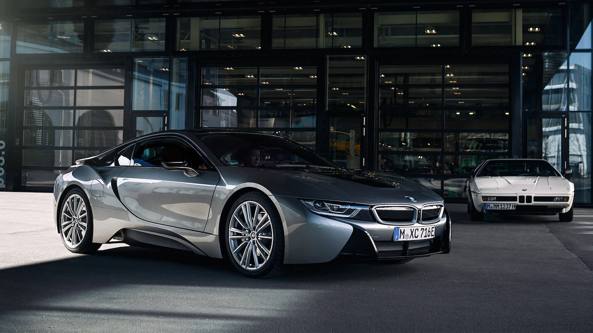

BMW i8
- 🔧 Moteur : Hybride 1.5L Turbo + moteur électrique – 374 ch
- ⚡ 0–100 km/h : environ 4.4 secondes
- ⛽ Consommation : environ 2.1 l/100km (en mode hybride)
- 📐 Dimensions : 4.69m x 1.94m x 1.29m
- 🎛️ Équipements : portes papillon, affichage tête haute, intérieur futuriste, iDrive, éclairage LED
La BMW i8 est une voiture hybride de sport au design avant-gardiste, combinant performance et efficacité énergétique.